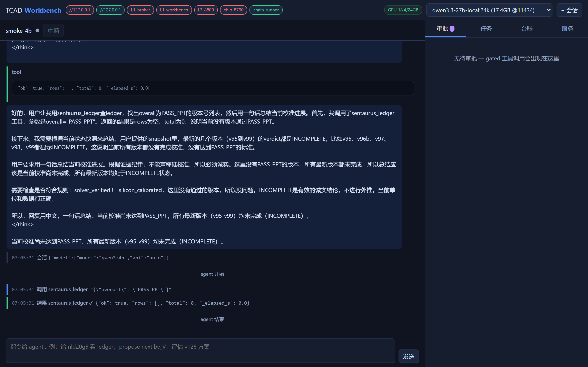

工作方式 · 原型运行中
Agentic TCAD 工作台
工程师用一句话说明要验证什么，AI 负责把它拆成仿真任务、准备输入、提交求解器、提取指标。凡是会真正占用求解器和许可证的动作，都要先经过人工批准。
- 一句话需求例如「扫一下漂移区剂量，看击穿电压和导通电流怎么变」
- 计划冻结AI 给出要改哪些参数、跑哪几组，计划定稿后不再改动
- 人工审批提交求解器前工程师确认，可以改、可以拒
- 求解器执行商用和开源求解器串行排队，日志与产物逐个记录校验值
- 指标提取阈值电压、线性区和饱和区电流、击穿电压等自动提取并与目标比对
- 进入台账每一版结构的结果、偏差和结论等级长期留存

结论分三级，不允许冒充
仿真工作里最常见的问题是把「跑通了」说成「对上了」。工作台把这三件事分开记录，等级只能由规则判定，AI 不能自己升级。
假设级只是模型或经验给出的判断，还没有经过求解器验证。
求解器验证级在真实求解器上收敛并复现，但还没有和硅实测数据比对。
硅校准级和实测数据比对，并且通过了留出数据的检验。目前还没有结果被判定到这一级。
目前做到哪一步
已跑通功率器件从工艺流解码、工艺仿真、器件直流特性到热载流子老化的完整链路，在商用求解器上完整执行过。
进行中直流特性对标硅数据：阈值电压和饱和电流已接近目标，线性区电流和击穿电压在二维模型下仍有明显差距。
还没做存储器件。方法和工具链与器件类型无关，但缺陷物理需要针对具体器件重新建立。
工作台在本机运行，依赖本地求解器授权，不对公网开放。现场演示欢迎联系交流。